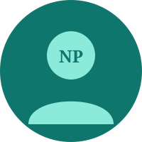
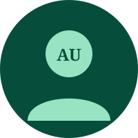
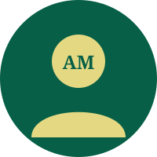

শিক্ষক ও কর্মচারী ডিরেক্টরি
চৌকুড়ী উচ্চ বিদ্যালয়ের কর্মরত ১৫ জন এমপিওভুক্ত শিক্ষক ও কর্মকর্তা-কর্মচারীদের পূর্ণাঙ্গ তালিকা ও প্রোফাইল।
মোঃ কামাল হোসেন
সহকারী প্রধান শিক্ষক (ভারপ্রাপ্ত প্রধান শিক্ষক)
জনাব মোঃ কামাল হোসেন দুই দশকেরও বেশি সময় ধরে চৌকুড়ী উচ্চ বিদ্যালয়ে সুনামের সাথে শিক্ষকতা ও প্রশাসনিক দায়িত্ব পালন করছেন। বর্তমানে তিনি ভারপ্রাপ্ত প্রধান শিক্ষক হিসেবে প্রতিষ্ঠানের সার্বিক একাডেমিক মানোন্নয়ন, ডিজিটাল রূপান্তর ও শৃঙ্খলা রক্ষায় নেতৃত্ব দিচ্ছেন।
শারমিন আক্তার
অফিস সহায়ক
শারমিন আক্তার বিদ্যালয়ের প্রশাসনিক কার্যালয়ের প্রাত্যহিক নথিপত্র আদান-প্রদান, শ্রেণিকক্ষ প্রস্তুতি ও দাপ্তরিক শৃঙ্খলা রক্ষায় নিষ্ঠার সাথে দায়িত্ব পালন করছেন।
সাফায়েত
পরিচ্ছন্নতা কর্মী
বিদ্যালয় প্রাঙ্গণ, শ্রেণিকক্ষ, ওয়াশ ব্লক ও খেলার মাঠের স্বাস্থ্যসম্মত পরিবেশ এবং সবুজায়ন কর্মসূচি রক্ষণাবেক্ষণে নিরলসভাবে কাজ করছেন।
মামুনুর রশিদ
নিরাপত্তা কর্মী
মামুনুর রশিদ ২০১৫ সাল থেকে বিদ্যালয়ের মূল ফটক, শিক্ষার্থীদের নিরাপদ যাতায়াত এবং সিসিটিভি নিরাপত্তা তদারকিতে দায়িত্বশীল ভূমিকা পালন করছেন।
মোঃ আব্দুর রউফ
নৈশ প্রহরী
প্রতিষ্ঠালগ্ন (১৯৯৪ সাল) থেকে দীর্ঘ ৩০ বছরেরও বেশি সময় ধরে বিদ্যালয়ের ভবন, বিজ্ঞানাগার ও মূল্যবান সম্পদের রাত্রিকালীন নিরাপত্তায় নিবেদিতপ্রাণ কর্মী।
আমেনা বেগম
আয়া
বিদ্যালয়ের ছাত্রীদের কমনরুম, প্রাথমিক স্বাস্থ্যসেবা ও নিরাপদ পরিবেশ নিশ্চিতকরণে আন্তরিকতার সাথে দায়িত্ব পালন করছেন।
মেহেরুন নেছা
অফিস সহকারী কাম কম্পিউটার অপারেটর
মেহেরুন নেছা ২০১০ সাল থেকে বিদ্যালয়ের অনলাইন রেজিস্ট্রেশন, বোর্ড ফরম পূরণ, উপবৃত্তি ডাটা এন্ট্রি (HSP-MIS), ব্যানবেইস জরিপ ও দাপ্তরিক নথিপত্র ডিজিটালাইজেশনে গুরুত্বপূর্ণ ভূমিকা রাখছেন।
মোঃ মাহবুবুর রহমান
সহকারী শিক্ষক
জনাব মোঃ মাহবুবুর রহমান দুই যুগেরও বেশি সময় ধরে কৃষি শিক্ষা ও পরিবেশ বিজ্ঞানে পাঠদান করছেন। বিদ্যালয়ের "One Child One Tree" বৃক্ষরোপণ কর্মসূচি ও ব্যবহারিক কৃষি প্রদর্শনী প্লট তাঁর প্রত্যক্ষ তত্ত্বাবধানে পরিচালিত হয়।
ইমতিয়াজ নুর জান্নাত পুনি
সহকারী শিক্ষক
ইমতিয়াজ নুর জান্নাত পুনি এনটিআরসিএ (NTRCA) কর্তৃক সুপারিশপ্রাপ্ত হয়ে বাংলা বিষয়ের সহকারী শিক্ষক হিসেবে যোগদান করেছেন। শ্রেণিকক্ষে শুদ্ধ বাংলা উচ্চারণ, সৃজনশীল লেখা ও সাংস্কৃতিক চর্চায় তিনি শিক্ষার্থীদের অনুপ্রাণিত করছেন।
মোঃ আবুল কালাম আজাদ
সিনিয়র সহকারী শিক্ষক (শিক্ষক প্রতিনিধি)
জনাব মোঃ আবুল কালাম আজাদ বিদ্যালয়ের অন্যতম প্রতিষ্ঠাতা-কালীন সিনিয়র শিক্ষক। ৩০ বছরের শিক্ষকতা জীবনে তিনি হাজারো শিক্ষার্থীকে সুনাগরিক হিসেবে গড়ে তুলেছেন এবং বর্তমানে পরিচালনা পর্ষদে শিক্ষক প্রতিনিধি হিসেবে দায়িত্ব পালন করছেন।

মোহাম্মদ নাজিম উদ্দিন পাটোয়ারী
সিনিয়র সহকারী শিক্ষক
জনাব মোহাম্মদ নাজিম উদ্দিন পাটোয়ারী ১৯৯৫ সাল থেকে এমপিওভুক্ত সিনিয়র শিক্ষক হিসেবে মানবিক ও সামাজিক বিজ্ঞান বিভাগে অত্যন্ত সুনামের সাথে পাঠদান করে আসছেন।

মোঃ আহছান উল্লাহ
সহকারী শিক্ষক (গণিত ও বিজ্ঞান)
জনাব মোঃ আহছান উল্লাহ দীর্ঘ ২৬ বছর ধরে গণিত ও বিজ্ঞান বিষয়ে পাঠদান করছেন। গণিতের ভীতি দূর করে লজিক্যাল ও আনন্দময় পদ্ধতিতে সমস্যা সমাধানে তিনি শিক্ষার্থীদের কাছে অত্যন্ত জনপ্রিয়।
শাহাব উদ্দিন
সহকারী শিক্ষক (গ্রন্থাগার ও তথ্যবিজ্ঞান)
জনাব শাহাব উদ্দিন বিদ্যালয়ের ৩,৭০০ বইসমৃদ্ধ কেন্দ্রীয় গ্রন্থাগারটি আধুনিক ক্যাটালগিং পদ্ধতিতে পরিচালনা করছেন এবং শিক্ষার্থীদের বই পড়ার অভ্যাস গঠনে বিশ্বসাহিত্য কেন্দ্রের পাঠচক্র সমন্বয় করছেন।

মোঃ আবু তাহের মজুমদার
সিনিয়র সহকারী শিক্ষক (ধর্ম ও নৈতিক শিক্ষা)
জনাব মোঃ আবু তাহের মজুমদার ১৯৯৪ সাল থেকে অত্র বিদ্যালয়ে ইসলাম ও নৈতিক শিক্ষা বিষয়ে পাঠদান করছেন। শিক্ষার্থীদের চারিত্রিক মাধুর্য, মানবিক মূল্যবোধ ও ধর্মীয় সম্প্রীতি শিক্ষায় তিনি নিবেদিতপ্রাণ।
মোঃ সেলিম রেজা
সহকারী শিক্ষক (ব্যবসায় শিক্ষা)
জনাব মোঃ সেলিম রেজা এনটিআরসিএ (NTRCA) কর্তৃক সুপারিশপ্রাপ্ত হয়ে ব্যবসায় শিক্ষা শাখায় সহকারী শিক্ষক হিসেবে যোগদান করেছেন। আধুনিক হিসাববিজ্ঞান, ব্যাংকিং ও তরুণ উদ্যোক্তা তৈরিতে তিনি বাস্তবমুখী পাঠদান করছেন।